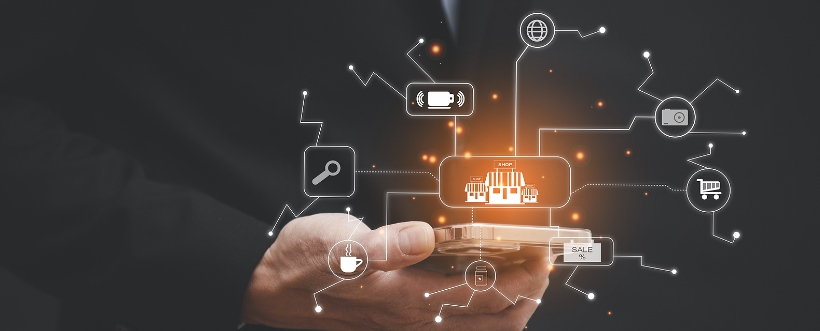
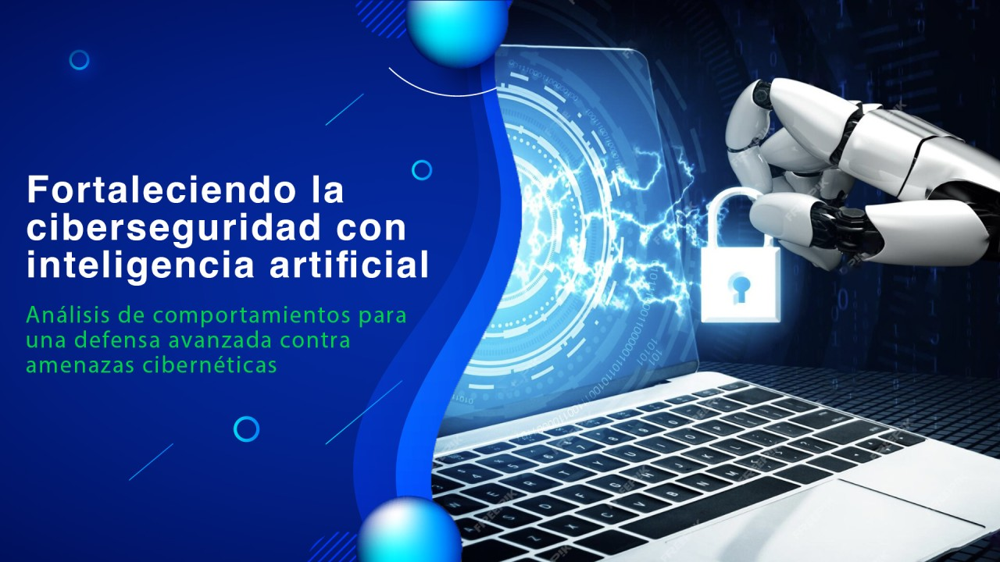

Introducción a la Ciberseguridad
La ciberseguridad es la práctica de proteger sistemas, redes y datos contra ataques digitales. A medida que la tecnología avanza, los riesgos cibernéticos también aumentan, lo que hace que la ciberseguridad sea esencial tanto para individuos como para organizaciones. Su objetivo principal es garantizar la confidencialidad, integridad y disponibilidad de la información.
Amenazas Cibernéticas Más Comunes
El panorama de las amenazas cibernéticas es amplio y está en constante evolución. Entre las más comunes se encuentran:
- Phishing: Técnicas de engaño para robar información confidencial, como contraseñas y datos bancarios.
- Ransomware: Ataques en los que los datos del usuario son cifrados y se exige un rescate para desbloquearlos.
- Malware: Software malicioso diseñado para dañar sistemas o robar información.
- Ataques DDoS: Sobrecarga de servidores para dejarlos fuera de servicio.
- Spyware: Programas que recopilan información del usuario sin su consentimiento.
Herramientas y Técnicas de Protección
La ciberseguridad se basa en diversas herramientas y técnicas para mitigar riesgos. Estas incluyen:
- Antivirus: Software que detecta y elimina programas maliciosos.
- Firewalls: Barreras que filtran el tráfico entrante y saliente en una red.
- VPN (Red Privada Virtual): Protege la identidad del usuario al cifrar su conexión a internet.
- Autenticación en dos pasos: Añade una capa adicional de seguridad al requerir dos formas de verificación.
- Copias de seguridad: Garantizan la recuperación de datos en caso de pérdida o ataque.
Ciberseguridad en Sectores Clave
La ciberseguridad es vital en sectores como:
- Educación: Protección de datos de estudiantes y sistemas académicos.
- Salud: Seguridad en historiales médicos y dispositivos conectados.
- Finanzas: Defensa contra fraudes y robo de datos bancarios.
- Gobierno: Protección de infraestructuras críticas y datos sensibles.
Tendencias Futuras en Ciberseguridad
El futuro de la ciberseguridad está marcado por tecnologías avanzadas como la inteligencia artificial, que permite identificar y responder a amenazas en tiempo real. Además, se espera un mayor enfoque en el cifrado cuántico y en la educación de los usuarios para prevenir errores humanos, que siguen siendo una de las principales causas de ataques cibernéticos.
